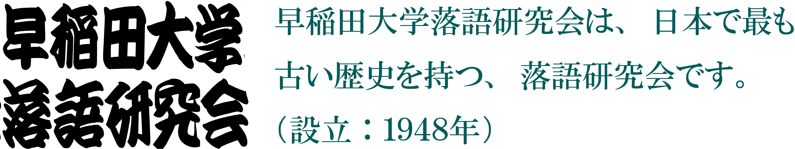

当会では他大学の「おちけん」とは異なり、落語の鑑賞を主な活動としています。
噺家さんをお招きしての「鑑賞会」を月一回の頻度で開催しているほか、
秋には大隈講堂での「わせだ寄席」という大規模な会を開催しています。
「らっけん」は落語の鑑賞が主な活動ではありますが、落語を実演する会員も多くいます。
早稲田祭での発表の他、老人ホームでの慰問やお店での催し等、発表の機会も充実しています。
当会には、このサークルに入ってから落語を聞き始めたというひともたくさんいます。
落語って「笑点」のことでしょ？
というあなたも、
「笑点」も知らないし落語なんて興味ないなぁというあなたも、